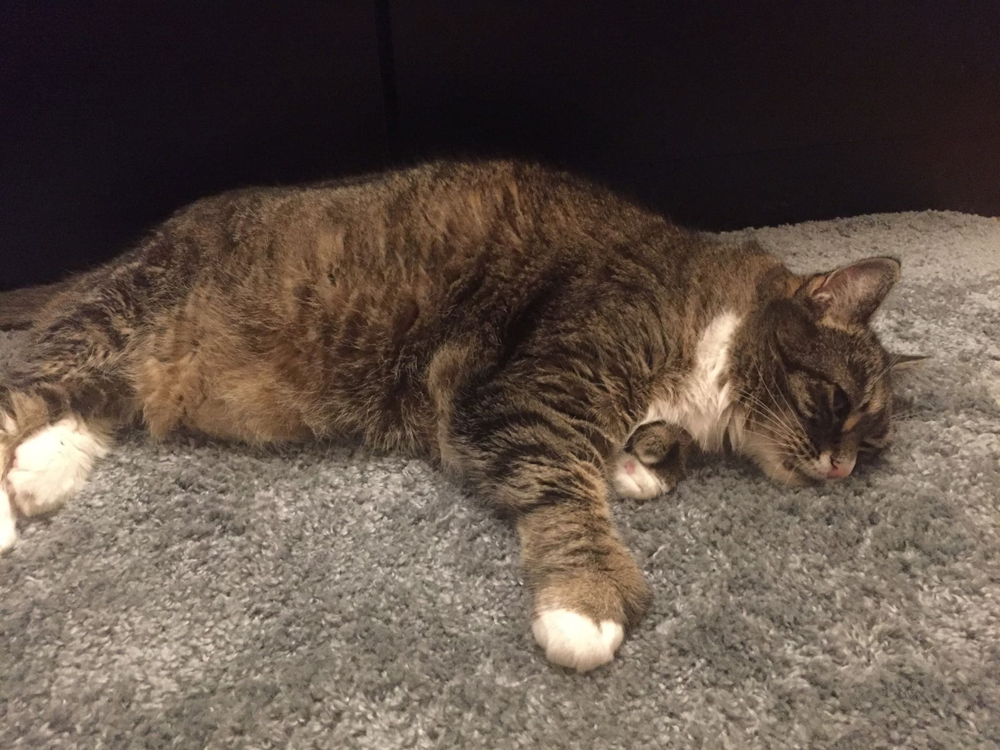

Returning to the Flow
It's a bit wild to realize that I have been back in Boston for longer than I was away on the west coast. I will admit, though, that my trip to the west coast is beginning to feel like a more distant memory.

I've been back at work for nearly five weeks, and just now I feel like I am getting back into the flow of things. It is worth noting that this morning my supply of Oregonian CBD-infused espresso beans ran out, so I am back on the regular non-calming espresso drip. Perhaps it is good that this change coincides with me diving into a major project as well as getting into the thick of some minor projects. On top of that I've been good about going to yoga several times per week and biking nearly every weekend.
The other day, I came across a journal that I had started a little over a year ago. It only had a handful of entries, and the last one was written exactly one year ago from yesterday. The journal itself, no bigger than a post-it note with a rubber cover in the shape of a chocolate bar with a corner bitten off, was from a Scandinavian novelty store in Alexanderplatz Berlin. On the first page, I titled it "Book of Fears, Thoughts, and Progress". After one year, it seemed like a good time to look back and reflect on these fears and thoughts as well as evaluate progress.
Of note, one year ago I was pretty sick. At the time, I wasn't sure what I was sick with, which was an extra layer of scary. To be honest, to this day I'm still not entirely sure what ailed me. I was sleeping 12+ hours per day, and feeling exhausted for the remaining waking hours, usually with a splitting headache, malaise, or some kind of nausea. I had virtually no appetite and no alcohol tolerance, as I felt I was in a perpetual hangover. This went on for months, along with several useless trips to urgent care or the ER, with ups and downs, before it slowly went away.
It was in this state of mind that I penned by thoughts one year ago. It is always a strange phenomenon reading notes from a previous self. Without going into too much detail, I found my entries distant, unfamiliar, and at times naïve. I'd say that's generally a good thing. Progress was real, at least in terms of my health and general mindset.
So I have now begin to add some new, shorter entries into this notebook in the hopes that in a year from now, I can look back and see fewer fears, deeper thoughts, and more progress.